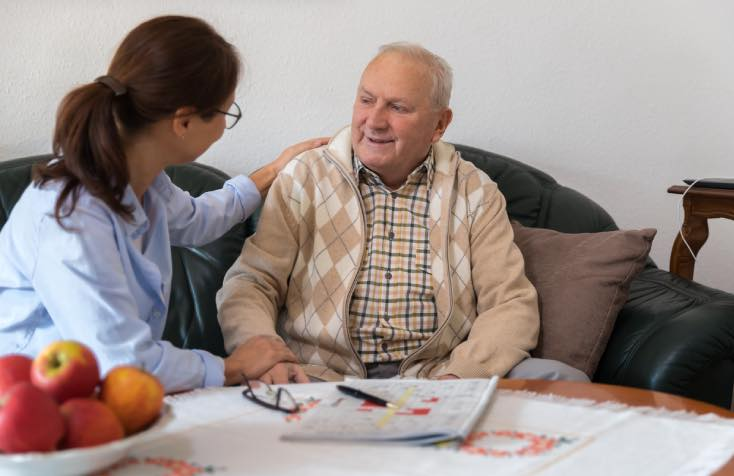
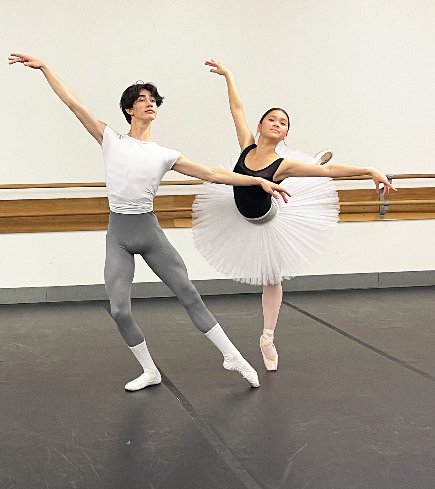
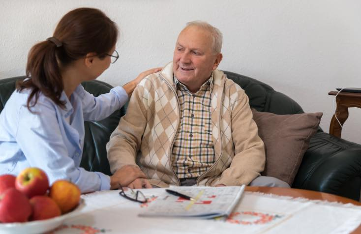
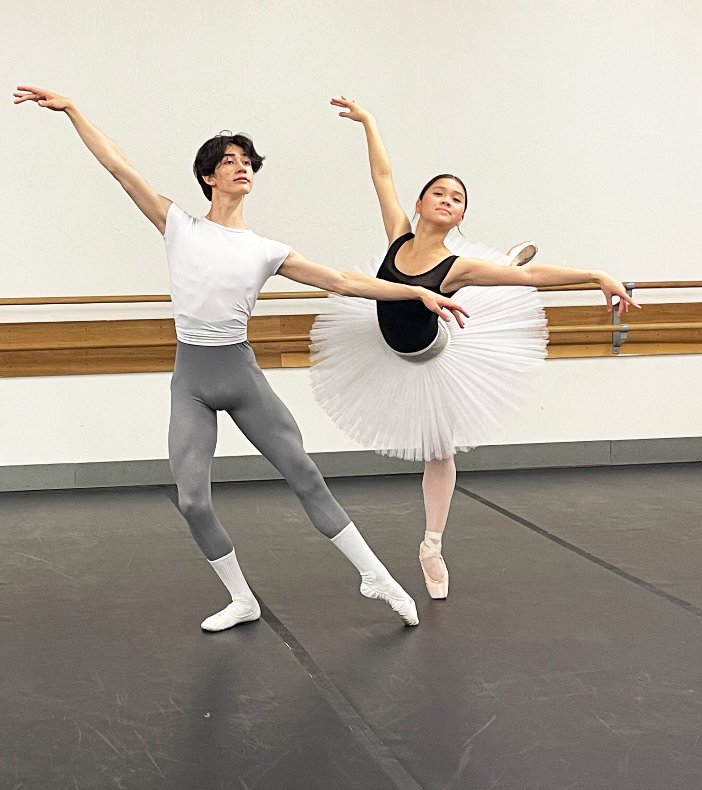

Sydney Rodriguez
Hi! My name is Sydney Rodriguez. I am a Public Policy Major who has a focus on health and family services. When I was first admitted to the University of California Riverside I was a Psychology major and felt really lost in life. Soon I explored on my own and figured out that Public Policy was my passion. I later switched to Public Policy during my second year of undergrad. My passion is working with minority communities. I can also explore work as policy analysts with state or federal agencies. I can also work as administrators for local governments. I can also begin careers in academia, business, and public relations. I mainly am looking for a stable job that will provide me with a good work/life balance. I don't want to work too much. I love my me time. I am a natural performer, and I need to put these abilities to use in the profession if I am to be happy and content. I am confident that I would make an excellent leader, whether for a small group or the entire organization. In any case, I need to feel seen and heard at work. The Lion would excel in any of the following fields.
I am a Leo and I was born in August. Some of the Leos are bold, warm, and loving. They are also the ultimate showmen. I can dazzle with the theatrical flair of a Broadway star and the charisma of a politician. I personally think that leos are captivating personalities. They have a way with words, and can speak eloquently on just about any topic, no matter how quickly they’ve just been introduced to it. Leos inject ambition into everything they do. They are ruled by the heart. They are brash and confident and trust their instincts. Their actions are natural and effortless. Leos are not afraid to work alone (as long as they can take time off to socialize). They also enjoy having their hands in every area of the business. Lions enjoy the hard work — and the delight — of seeing their concept develop from the ground up, blossom, and bear fruit.
Leos have an insatiable need for advancement that is easily satisfied by the admiration of others. When they are in pain, it is obvious. I'll utilize their rage to defend them from their vulnerabilities. I want to be viewed as unbreakable because they are afraid of exposing fragility, relying on others, and feeling incomplete. The issue about me is that I despise being told what to do. I have complete control over my own universes and their fate. Betrayal and desertion have left me permanently damaged. I use pride as a sword to safeguard their sovereignty. Leos are attentive, loyal, and generous companions. They are always under the impression that they must give more than they receive. They treat you the way they treat themselves as one of the most playful and luxurious indicators, and will spontaneously do lovely things for you just because they feel like it. They're not very interested in keeping track of turns or even splits.
Experience
Warehouse Associate
• Keep the work area clean daily and assist in other areas when needed.
• Providing proper designated shipping address/information.
• Verifying the accuracy of product picked/shipped.
Cashier
• Managed and coordinated complex hardware, software, and network problems to accurately resolve issues, and prepare reports summarizing and analyzing issues.
• Provide customer service while bagging and charging items. Responsible for counting cash in the register
“Interact” President/Manager
• Manage all business inquiries for 1 year for 200+ students.
• Directly influence growth of existing student base by developing strong relationships with funders and feeder organizations.
• Enforced rules and duties, assigned assignments and tasks to the student body.
• Cultivating domestic and international student enrollment.
Education
Diamond Ranch HighSchool
University of California Riverside
Portfolio




